Objectives: to tell the features of the life of the population, nature, history of a country like Australia. Analyze in detail each of the segments.
Australia is a country that occupies the mainland of the same name, which is washed by the Indian and Pacific oceans. The capital of Australia is a city called Canberra. For European tourists, this country will seem almost like a different world, why so, you can read more below.
Australia is a country surprisingly rich in natural and climatic features.
Due to the fact that Australia is a rather large country, therefore, in terms of tourism, it is a favorable place for recreation. But you also need to consider that this is one of the driest continents on the planet, since three-quarters of its surface has insufficient moisture.
So, one of the most obvious of the features of the climate is that the seasons of the year are different from those to which we are accustomed. Often, the warmest month of the year is January (in addition, the warmest months of the year are November, December, February), and the coldest is July (others: May, June, August). That is, what we used to call winter in Australia will be considered Australian summer, and what is summer - Australian winter, and so on. This phenomenon is connected with the location of the continent in the Southern Hemisphere.
Due to its position mainly in tropical latitudes, the mainland receives a huge amount of solar heat. During the Australian summer, in the center of the country the temperature reaches an average of +35°C during the day, but quickly drops to around +10°C at night. And during the Australian winter, during the day the air temperature is +15°C, and at night +5°C.
The change of seasons is quite clearly manifested only in the northern and southern parts of the continent, but it is expressed not in seasonal temperature changes, which are quite high throughout the continent, but in the seasonality of precipitation. “Wet season” and “dry season” in Australia are concepts that are associated with very sharp changes in plant aspects, living conditions, economic opportunities, and so on.
There are few large rivers on the Australian mainland, except for the island of Tasmania. Australia's main river is the Murray, with tributaries the Goulburn, the Murrumbidgee and the Darling.
At the beginning of summer, these rivers are the most full-flowing, because. snow is melting in the mountains. They become very shallow during the hot season. Even the Darling, which is the longest in Australia, gets lost during a drought in the sands.
The lakes of Australia are predominantly waterless basins. The largest lakes in Australia include Lake Eyre, Gairdner, Garnpang, etc.
For example, Lake Hillier, it is bright pink, is located on the Middle Island. Even if you fill something with water from the lake, its color will not change. There are no algae in the lake, and scientists have not given an explanation for what exactly gives the lake such a pink color.
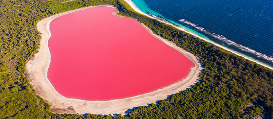Or there is the luminous Gippsland Lake. It is a complex of swamps and lakes located in the state of Victoria. Some argue that the lake glows as a result of the vital activity of micro-organisms living in this lake.
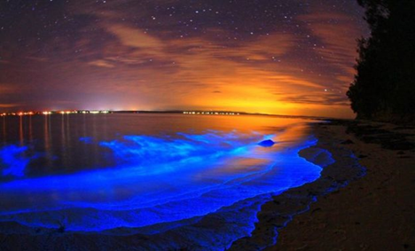The Australian mainland for a long time, starting from the Cretaceous period, was isolated from other continents of the planet.
In Australia, powerful earthquakes occur infrequently, since the continent is located on the same tectonic plate. According to Australian scientists, the tremors were felt quite strongly, since the earthquake was relatively small: it occurred at a depth of 10 kilometers.
The most powerful earthquake of the 19th century occurred in South Australia in 1897. The epicenter was located off the coast near the city of Beechport. Most of the buildings in the city were destroyed, and neighboring regions were also badly affected.
But fires, droughts and floods are a very serious problem, both for the population and for nature.
One of the largest gift occurred recently in 2020. The fire, according to experts, covered from 8 to 10 million hectares of land. Several dozen people died, burned plants and animals number in the billions. Entire regions were left without electricity, half the continent was covered in smoke.
Fires in Australia happen every year, but in 2020 the scale of destruction is extreme. The causes of fires are many, but experts see a connection between the growing risk of fires and the rising temperature of the water in the oceans.
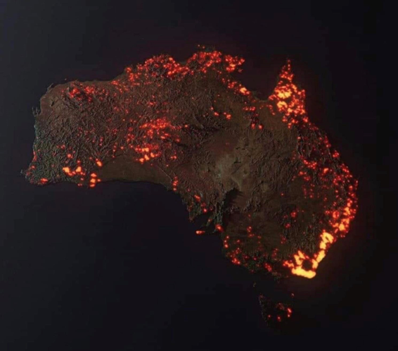The first recorded drought occurred in Australia in 1803 in New South Wales and resulted in severe crop failures. The next recorded drought lasted from 1809 to 1811. The drought of 1813–1815 forced the New South Wales sheep farmers to look for new pastures.
The latest drought in New South Wales has been going on for six years, but the state industry secretary said there is little reason for gloomy forecasts.
The main paradox of Australian floods is not only in the traditionally dry climate, but also in the absence of large rivers in Australia. Nevertheless, flooding is one of the main Australian environmental problems.
The largest river of the Murray continent (2375 km), by global standards, has rather average full-flow rates and basin area. Much of the Murray's tributaries often dry up during the summer.
Most of the floods in Australia occur in the east, where the largest rivers are concentrated.
The main Australian rivers, originating in these places, overflow with rainwater and flood large areas of land. Also, floods can be aggravated by additional causes, among which tropical storms can be distinguished.
The first flood in New South Wales was recorded in 1806.
The flora and fauna of Australia is truly unique.
Few countries have such a diverse range of animals and plants.
The animal world of Australia is also amazing. There are no such animals in any other corner of the globe. Almost all animals in Australia are endemic, that is, they are not found anywhere in the world. Such living rarities as the platypus and echidna are unknown to scientists even in the fossil state. They, like the most ancient mammals, lay eggs, and then hatched cubs are fed with milk. When the platypus was first caught, English scientists did not believe that such an animal really existed. They thought that the duck's beak was glued to the skin of some tropical animal. Only in 1884 in Montreal was the dispute between a mammal platypus or a bird resolved. In the end, it was decided in favor of the mammal.
Now, out of about 250 species of marsupials, 180 live in Australia. Most Australian animals prefer to carry their young in bags. The brightest representatives of these kind of animals is kangaroos (already become a real symbol of the country). In a kangaroo, a cub is born at a very early stage of development, the size of a walnut. Clinging to his mother's fur, he reaches the bag on her stomach. In this bag, he spends several months, eating his mother's milk. Even grown-up cubs, which can already move independently, hide in a bag to their mother in a moment of danger.
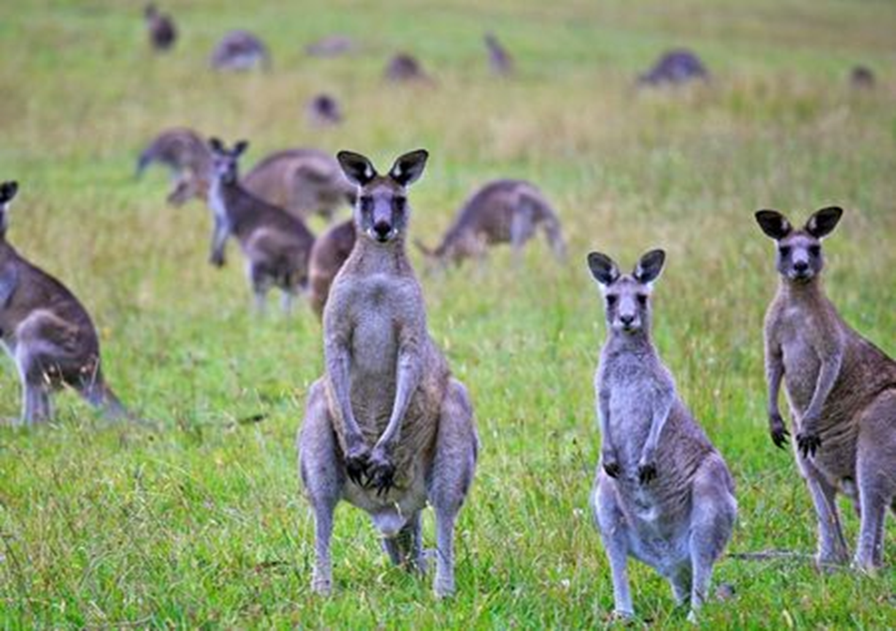Also, the marsupial koala bear is very cute. He looks remotely like a bear, rather it is a plush almost toy bear cub no more than 80 centimeters tall. Koala lives in trees. The cubs usually sit on the mother's back, clinging to her fur. Sailors have repeatedly tried to bring the koala to their home, in another country. But always these cute animals died of hunger: they eat only young shoots of some eucalyptus trees. These are nocturnal animals. With the onset of darkness, they come to life and start eating. Their whole life is spent sleeping and eating.
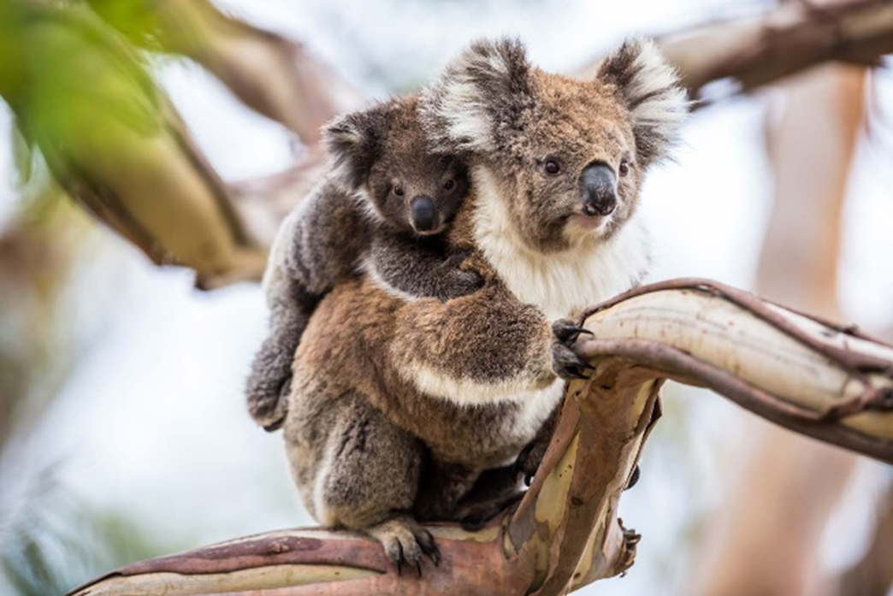Marsupial anteaters, possums, badgers, wombats very reminiscent of marmots, and even marsupial moles and marsupial squirrels live on the continent. There are 125 species of marsupials in total. In the north of Australia, monitor lizards are found - predatory lizards 2.5 meters long. They look like land crocodiles. However, many monitor lizards can swim quite well. All monitor lizards climb remarkably, some even jump. Their main occupation: lie in the sun, eat, drink very little.
The most common bird in Australia, the emu, lives in the semi-deserts of the continent. Ostriches do not fly, but they can run up to 50 kilometers per hour. Australian farmers have to fence their plots with metal mesh, as ostriches trample the grass on the plots.
In total, about 853 species of birds live in Australia.
Many other birds also live in Australia: black swans, budgerigars, birds of paradise, lyrebirds, bowerbirds.
Most rare animals are collected in Australia in national parks.
Rabbits were also a big problem for Australia, namely that there were too many of them. It all started with a thoughtless act, when Tom Austin, a passionate hunter, released several animals into the wild, deciding that there would be no consequences from this. The fact is that in most of Australia there are no predators capable of holding back the explosive growth of the population of any animals.
By the end of the 19th century, the results of such frivolous interference with nature became visible. Rabbits contributed to the extinction of several dozen species of Australian wild animals, and also caused serious damage to agriculture. They gnawed the young trees in the gardens and ate the crops in the fields. Rabbits also significantly destroyed the natural vegetation cover, which, in the arid climate of most areas, led to the degradation and destruction of the soil layer. In addition, due to the large consumption of grass, they became the main competitors of sheep, which were bred by local farmers. All these events were widespread. The number of rabbits has stepped over several million individuals, and the annual shooting of 2 million rabbits did not improve the situation. Producers of agricultural products especially suffered from the invasion of rabbits. At the beginning of the 20th century, a wire fence was even built in the way of the distribution of rabbits, but it was easily overcome by animals that perfectly jump and dig holes.
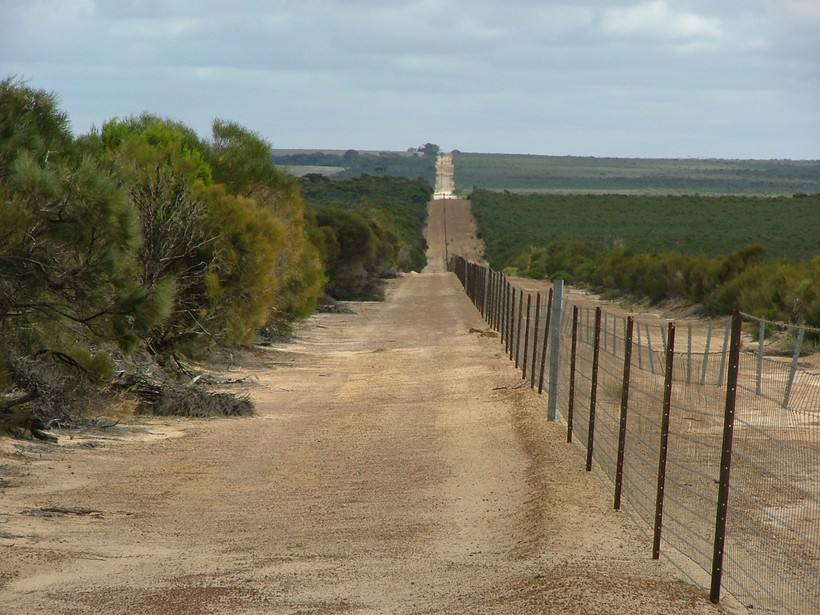Then the Australians had to resort to the help of scientists. In 1950, specialists infected rabbits with the myxomatosis virus, which led to the death of European rabbits.
This led to a reduction in the rabbit population from 600 to 100 million individuals. The surviving rabbits developed genetic resistance to the virus, which restored the population to 200–300 million by 1991.
Despite the deplorable situation with rabbits, it became in many ways instructive and showed how poorly we imagine the consequences of interfering with nature. And even a harmless, at first glance, act can lead to a serious environmental problem, the solution of which has not been found so far.
Eucalyptus is considered a plant symbol in Australia. The tallest plant in the world is the most common in Australia. At the age of 350-400 years, this plant reaches a height of 100 meters. There are cases when trees grew to 150-170 meters, but this is extremely rare.
Eucalyptus grows incredibly fast. It is always light in eucalyptus forests, because the leaves of this tree turn in parallel with the falling rays of the sun. This helps the tree retain moisture.
Eucalyptus leaves contain 3-5% aromatic essential oil that kills bacteria. This oil is used for colds, pneumonia. For all the amazing properties of these trees in Australia, the homeland of eucalyptus, the locals call them "wonder trees".
This is a huge tree that has powerful roots that go 20 and sometimes 30 meters into the ground.
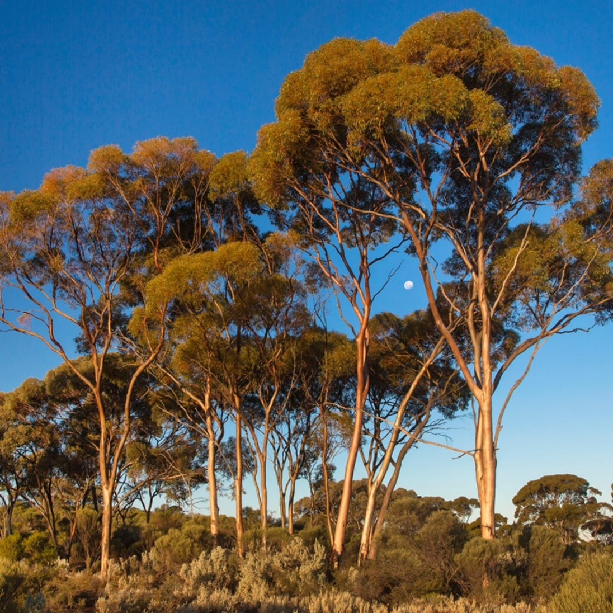The kangaroo paw plant, which is also found nowhere else in the world, has become the emblem of the state of Western Australia. The bizarre shape of the velvety flower really resembles an animal's paw.
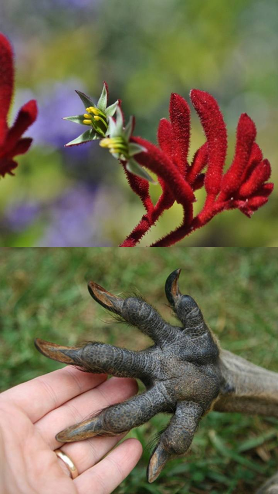Also, an interesting example of the plant world in Australia is the bottle tree. The bottle tree is often found in Australia. This plant is very well adapted to heat, drought and lack of water. From a distance, it looks like a giant bottle. Moisture accumulates in the trunk, which is consumed in drought.
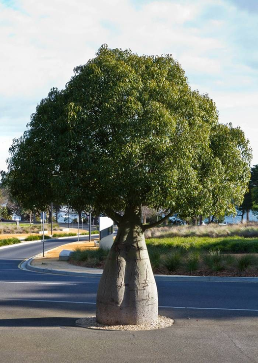According to 2020 data, approximately 25.5 million people live in Australia, so Australia's place in terms of population in the world is in the fortieth.
A significant part of the population of the country are immigrants. Every fourth inhabitant of Australia was born outside its borders, part of the population of Australia are the descendants of immigrants from the British Isles - the British, Irish, Scots. Also in 1991, approximately 250 thousand Aborigines and mestizos were recorded living in the country.
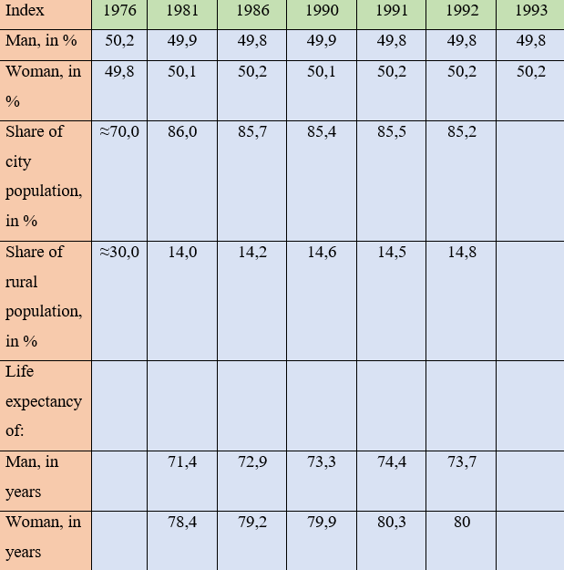The population density varies across the country. This is due to the fact that about half of the territory of Australia is occupied by deserts and semi-deserts that are not suitable for habitation. Australians are mostly city dwellers. As we can see from the table: at the beginning of the 20th century, 50% of the country's population lived in cities, after the Second World War - 70%, in the 60s the rural population was 16%, in the 80s - 14%. Modern Australia remains a country of mass immigration, annually it receives 100-150 thousand people.
Regarding culture: it is difficult to divide the culture in Australia, as many nationalities live on the continent, plus the natives, who are by no means a part of civilization. The main language is English, but Australia has its own dialect of English, informally called "Strain". Written Australian English mostly follows the rules of British English.
Of the national holidays, one of the main ones is January 26 of each year, Australia celebrates the day of the country. Millions of people from all over Australia take to the streets and walk tens of kilometers carrying the flag of the country in their hands. On this day, any cases are cancelled.
Also in Australia they celebrate the new year not only on the usual day for us on January 1st, but also according to the lunar calendar in the first decade of February.
From culture, literature, theaters, cinema are also developed ... However, all these industries are poorly funded by the state, and are mainly under private control. For example, about 90% of theaters are commercial. Movies were made mostly in the mid-1900s, and mostly about the first and second world wars, similarly, in the Australian poetry of the 1900s, you can also find most of the books on the military theme.
In general, Australians are friendly, cheerful and positive people with an interesting culture and history. They are always in a good mood, they are always happy! When communicating with Australians, it is customary to smile, if you do not follow this principle, you will be considered ill-mannered. Local residents are mobile, often move and travel, relax in nature, love hunting and sports, especially surfing, because its one of the favorite activities for Australians.
Human appeared in Australia 40 thousand years ago. They were newcomers from South and Southeast Asia, the forerunners of modern aborigines.
The discovery of Australia has long been associated with the name of the English navigator James Cook. In fact, the first Europeans who visited the coast of this continent and met here with scattered tribes of aborigines were the Dutch: Willem Jansson in 1605 and Abel Tasman in 1642 Jansson crossed the Torres Strait and sailed along the coast of the Cape York Peninsula, Tasman discovered the south -the western part of Tasmania, which he considered part of the mainland. However, these discoveries remained secret for unknown reasons.
James Cook sailed to the east coast of Australia only one hundred and fifty years later, in 1770, and immediately declared it an English possession. A royal "penal colony" for criminals was created here. Representatives of the British authorities, who arrived in 1788 with the "first fleet" to the shores of Australia, founded the city of Sydney, which was subsequently proclaimed the administrative center of the British colony of New South Wales, created in 1824. Aborigines were hunted, and bonuses were given for the dead. Often the colonists staged real raids. Not surprisingly, a hundred years later, most of the indigenous population was exterminated.
The end of the 18th and the entire 19th century for Australia is the time of geographical discoveries. In 1797, the exploration of the shores of the continent began by the talented English hydrographer Flinders. He confirmed the existence of the Bass Strait, explored the coasts of Tasmania and South Australia, and made many other discoveries. By the 19th century, the contours of the mainland were mostly mapped, but the interior remained a "blank spot". More than a dozen large expeditions were equipped to explore the interior of Australia, attempts were made to cross the continent.
For the first time, Burke managed to cross the continent from south to north, leading a well-equipped expedition in 1860-1861. Burke went from Melbourne to the Gulf of Carpentaria, but died along with his companion on the way back.
In 1851, a gold rush began in Australia. This seriously changed the demographic situation on the continent. An influx of immigrants from Great Britain, Ireland, other European countries, North America and China began.
Also, an interesting fact is that in 1911 the construction of the city of Canberra began, specifically in the role of the capital. This was done to resolve the conflict between two cities: Sydney and Melbourne, both of which claimed the seat of the capital.
Between the First and Second World Wars, Australia received from Great Britain some territories that were previously directly subordinate to London: Norfolk Island (1914), Ashmore and Cartier Islands (1931) and claims to the Australian Antarctic Territory (1933). Australia gained independence under the Statute of Westminster in 1931.
On September 3, 1939, shortly after the German invasion of Poland, Australia declared war on Germany, thus entering World War II. During the war years, 993 thousand people out of 6.9 million people of the country's population served in the country's armed forces. Australian military formations took part in operations in Europe. In addition, the territory of Australia for the first time in history was subjected to a direct attack by the enemy.
After the Second World War, the Australian government began a massive program to receive immigrants from Europe. Between 1948 and 1975, 2 million new residents arrived in Australia. Since 1973, the flow of Asian migrants began, which significantly changed the demographic and cultural life of the country.
Since 1986, Australia has finally ceased constitutional ties with Great Britain, however, until now, the British Queen has been considered the formal head of state. The de facto head of state is the Prime Minister of Australia.
Historically, the north was depicted from above on geographical maps. Therefore, the Australian map will look very unusual for us, namely: it will be upside down.
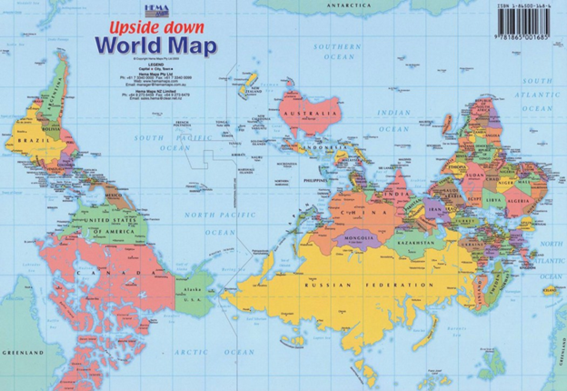